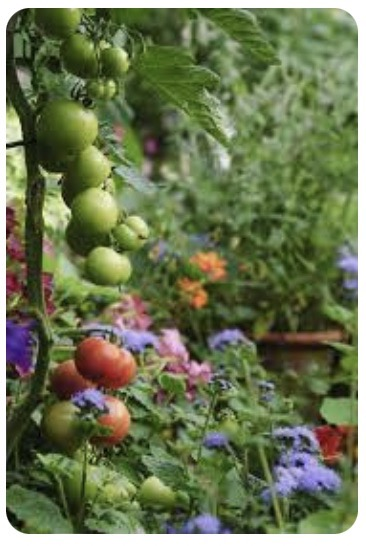

Gardening For Beginners
Types of Gardens

In the world of gardening there are many different types of things you can choose as the focal point and that determines the type of garden you have. When most people think of gardens, they think of either flowers or food, but the reality is you can make almost anything into a garden. Some popular types of gardens include:
- Flower
- Vegetable/Fruit
- Water
- Rock
- Shade
The type of garden you create is only limited by your imagination, so be creative and come up with a garden that expresses your interest and personality.